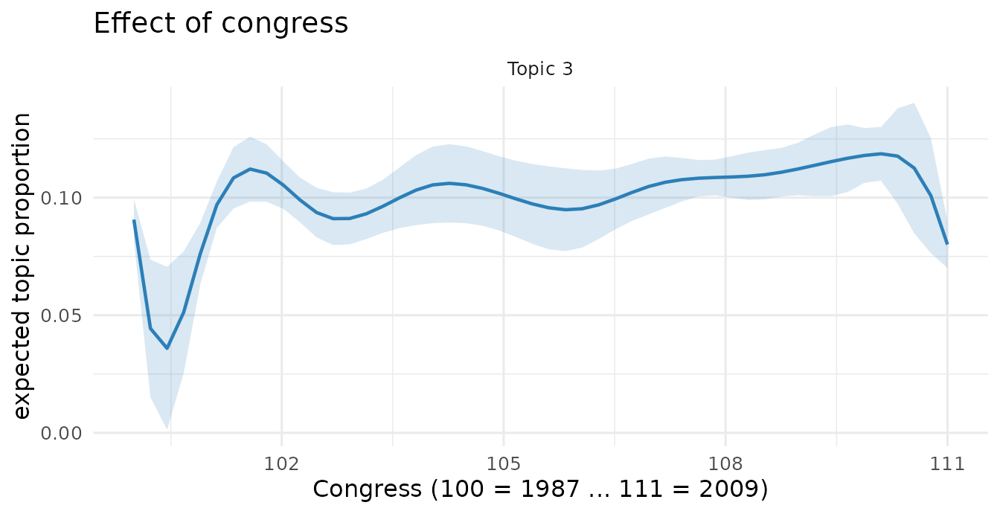

The companion vignette shows that faSTM runs
the same analysis as the stm package. This one
covers what faSTM adds on top of that framework:
multiple content covariates, an estimateEffect() with
weights and clustering, alternative coherence metrics, and a
tidyverse-friendly surface. None of these require leaving the
stm-compatible object; they are extra tools, not a
different model.
We use a second bundled corpus, congress: a balanced
sample of 1,679 U.S. House and Senate floor speeches,
Congresses 100–111 (1987–2011), with metadata party
(Democrat/Republican), chamber (House/Senate), and
congress (the time index). It is built for exactly this
vignette: two categorical covariates that cross, plus a time axis.
library(faSTM)
data(congress)
congress
#> <faSTM_corpus> 1679 documents, 4110 vocabulary terms, 3 metadata columns
table(congress$meta$party, congress$meta$chamber)
#>
#> House Senate
#> Democrat 420 420
#> Republican 419 420We fit one prevalence model (topic prevalence as a function of party and a smooth of time) and reuse it throughout.
Multiple content covariates
stm allows a single content (SAGE) covariate. faSTM
accepts several and crosses them into a saturated
content model: one topic-word distribution per combination of levels.
Here party (2) × chamber (2) gives a 4-group
content model, so we can read how Democrats vs Republicans and
House vs Senate word each topic differently:
fitC <- stm(congress, K = 12,
prevalence = ~ party + s(congress),
content = ~ party + chamber, # crossed -> 4 SAGE groups
verbose = FALSE)
fitC$settings$dim$A # number of content groups
#> [1] 4The fit reports the crossing as it runs, and stm’s SAGE
tooling works unchanged on the result:
sageLabels(fitC, n = 5) # top words per topic, per party×chamber group
labelTopics(fitC, topics = 3)The crossed levels are stored on the fit
(settings$covariates$contentvars,
contenttable) so per-covariate marginals can be recovered
later.
Framing, not agenda
Content covariates are where the interesting partisan signal lives.
Above, estimateEffect will show that Democrats and
Republicans devote similar prevalence to the budget/tax topic,
but they word it very differently. A
~ party content model makes that concrete:
fitParty <- stm(congress, K = 12, prevalence = ~ party + s(congress),
content = ~ party, verbose = FALSE)
sl <- sageLabels(fitParty, n = 10)
tax <- which(apply(sl$marginal, 1, function(w) any(grepl("^tax", w))))[1]
sl$marginal[tax, ] # shared topic vocabulary
#> [1] "tax" "budget" "families" "billion" "health"
#> [6] "government" "pay" "care" "spending" "jobs"
sl$bygroup$Democrat[tax, ] # how Democrats word it
#> [1] "health" "sick" "care" "insurance"
#> [5] "profits" "reconciliation" "children" "foster"
#> [9] "birth" "denied"
sl$bygroup$Republican[tax, ] # how Republicans word it
#> [1] "taxing" "harbor" "blame" "green" "error" "criticize"
#> [7] "computers" "taxed" "extra" "authority"The shared vocabulary is fiscal (tax, budget, spending), but Democrats reach for health, care, children, preexisting, denied while Republicans reach for taxing, taxed, CBO, authority: same topic, opposite framing. This is the distinction prevalence covariates can’t capture and content (SAGE) covariates can.
estimateEffect(): cluster-robust SEs and weights
faSTM keeps stm’s method-of-composition uncertainty
(re-drawing topic proportions per simulation) and adds design features
grouped data usually needs.
Cluster-robust standard errors. Speeches within a
Congress are not independent, so we cluster by congress.
faSTM swaps the classical vcov for a sandwich estimator with
stm’s finite-sample correction:
eff <- estimateEffect(1:12 ~ party + s(congress), fit,
metadata = congress$meta,
cluster = congress$meta$congress, nsims = 25)
summary(eff, topics = 3)
#> faSTM estimateEffect (Global uncertainty, 25 draws)
#>
#> topic3:
#> Estimate Std. Error t value Pr(>|t|)
#> (Intercept) 0.0907 0.0045 20.0289 0.0000
#> partyRepublican 0.0046 0.0067 0.6816 0.4956
#> s(congress)1 -0.1038 0.0334 -3.1050 0.0019
#> s(congress)2 0.0663 0.0219 3.0286 0.0025
#> s(congress)3 -0.0224 0.0154 -1.4547 0.1460
#> s(congress)4 0.0326 0.0178 1.8359 0.0665
#> s(congress)5 -0.0065 0.0156 -0.4167 0.6769
#> s(congress)6 0.0203 0.0122 1.6706 0.0950
#> s(congress)7 0.0153 0.0139 1.1027 0.2703
#> s(congress)8 0.0297 0.0218 1.3633 0.1730
#> s(congress)9 0.0282 0.0257 1.0992 0.2719
#> s(congress)10 -0.0106 0.0052 -2.0476 0.0408
#> R-squared: 0.005 | F(11,1667): 0.79summary() also takes p.adjust.method
(e.g. "BH") to correct across topics, and reports
per-equation R² and F diagnostics. Survey weights enter
the same way via weights = (weighted least squares per
draw).
Random effects in prevalence
Prevalence formulas may include lme4-style random-effect
terms; faSTM fits a mixed model per posterior draw and pools with
Rubin’s rules. Natural here if you treat Congresses as exchangeable
groups:
eff_re <- estimateEffect(1:12 ~ party + (1 | congress), fit,
metadata = congress$meta, nsims = 25)
summary(eff_re, topics = 3) # fixed effects + pooled variance componentsAverage marginal effects
Coefficients on splines and factors are hard to read.
ame() reports the average marginal effect:
the mean change in topic proportion for a Republican-vs-Democrat shift,
averaged over the sample:
Topic prevalence over time
Because prevalence includes s(congress), we can trace a
topic’s share across the 1987–2011 window:
plot(eff, "congress", method = "continuous", topics = 3,
model = fit, xlab = "Congress (100 = 1987 ... 111 = 2009)")
Coherence: NPMI and C_V
Alongside Mimno’s semantic coherence, faSTM offers two more coherence metrics common in the topic-model literature: NPMI and C_V:
data.frame(
topic = 1:5,
mimno = round(coherence(fit, measure = "mimno", M = 10)[1:5], 2),
npmi = round(coherence(fit, measure = "npmi", M = 10)[1:5], 3),
c_v = round(coherence(fit, measure = "c_v", M = 10)[1:5], 3)
)
#> topic mimno npmi c_v
#> 1 1 -84.61 0.104 0.559
#> 2 2 -80.32 0.139 0.620
#> 3 3 -51.80 0.135 0.640
#> 4 4 -65.44 0.183 0.701
#> 5 5 -85.67 0.153 0.663search_k() can select K by any of these, and
parallelizes across K:
A tidyverse-friendly surface
faSTM ships broom generics, so model output flows
straight into dplyr/ggplot2.
# tidy the topic-word matrix (also matrix = "frex" or "gamma")
head(tidy(fit, matrix = "beta"), 4)
#> topic term beta
#> 1 1 words 5.162615e-04
#> 2 1 daniel 5.855844e-13
#> 3 1 served 3.306205e-04
#> 4 1 armed 1.130633e-12
# one-row model summary
glance(fit)
#> k docs terms content_groups iterations converged
#> 1 12 1679 4110 1 68 TRUE
# tidy an estimated effect into a coefficient table
head(tidy(eff), 4)
#> topic term estimate std.error statistic p.value
#> 1 topic1 (Intercept) 0.067557112 0.004297543 15.719937 4.970589e-52
#> 2 topic1 partyRepublican 0.006103871 0.005660509 1.078326 2.810445e-01
#> 3 topic1 s(congress)1 -0.059664679 0.024336967 -2.451607 1.432398e-02
#> 4 topic1 s(congress)2 0.060010549 0.017085541 3.512359 4.559887e-04predict() infers topic proportions for new documents
against the fitted model:
predict(fit, newdata = held_out_corpus) # a faSTM_corpus / dfm of new docs